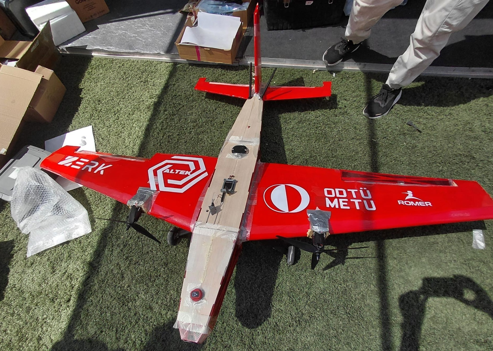

Mühendislik Harikası İHA Platformlarımız
ALTEK Teknoloji Takımı olarak; tam otonom hava muharebesi, derin öğrenme ile hedef kilitlenme, kamikaze dalış ve gelişmiş aviyonik mimariye sahip insansız hava araçları geliştiriyoruz.
ALTEK 2026 Savaşan İHA Platformu
psychology Platform Vizyonu & Görev Kabiliyetleri
ALTEK 2026 Savaşan İHA, TEKNOFEST Savaşan İHA yarışma isterleri doğrultusunda hava-hava dinamik muharebe, otonom hedef takibi ve kamikaze dalış görevlerini icra etmek üzere optimize edilmiştir.

* ALTEK ZERK savaşan İHA platformu, saha hazırlıkları esnasında.
center_focus_strong Otonom Hedefe Kilitlenme
Görev bilgisayarındaki gerçek zamanlı YOLO tabanlı görüntü işleme hattı, hedef İHA'yı kare içinde tespit ederek optik eksende sabitler; roll ve pitch eksenlerinde canlı ayarlanabilen PID kazançlarıyla kilitlenmeyi sürdürür.
rocket Otonom Kamikaze & QR Kod Tanıma
Belirlenen kara hedefine yüksek hız ve dik açıyla dalış gerçekleştiren İHA, dalış esnasında hedef üzerindeki QR kodu yüksek çözünürlüklü kamerası ile çözümleyerek yer kontrol istasyonuna telemetri paketi olarak iletir.
schema Sistem Mimarisi & Donanım Blokları
3 KATMANLI ENTEGRE MİMARİ İnteraktif Haritayı İncele arrow_forward
Uçuş Kontrol Kartı
IMU, barometre, GPS ve manyetometre verilerini füzyonlayarak yüksek frekansta kontrol yüzeylerini ve itkiyi yönetir.

Görev Bilgisayarı
Kamera akışından gerçek zamanlı YOLO nesne tespiti, otonom kilitlenme koordinatı hesaplama ve MAVLink telemetri köprüsü.

Yer Kontrol İstasyonu
Özel yazılım arayüzü ile batarya, irtifa, kilitlenme durumu, harita takibi ve yarışma sunucusu entegrasyonu.


ALTEK TALON
GÖREV BAŞARISI2025 TEKNOFEST Savaşan İHA yarışması için özel olarak geliştirilen sabit kanatlı taktik İHA platformumuz. Yüksek aerodinamik kararlılığı, geniş iç aviyonik hacmi ve V-kuyruk (V-tail) kontrol geometrisi ile başarılı uçuş testlerini tamamlamıştır.